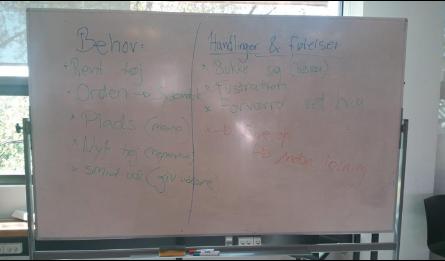

Brugerobservationer
What-How-Why-metoden:
Man spørger altid om hvad og hvordan og forstår disse svar, før man spørger om hvorfor.
I denne video er manden i gang med at lede efter noget nyt rent tøj, men med store problemer da skabet har svært ved dette fordi skabet er rodet og uden systematik.
Derudover bliver manden langsomt mere og mere irritabel over ikke at kunne finde noget nyt rent tøj.
Dette gør han, da oplevelsen er dårlig, efterosm han ikke kan finde noget i sit skab, og i sidste ende alligevel ender med at finde noget tøj et andet sted end i sit skab.
